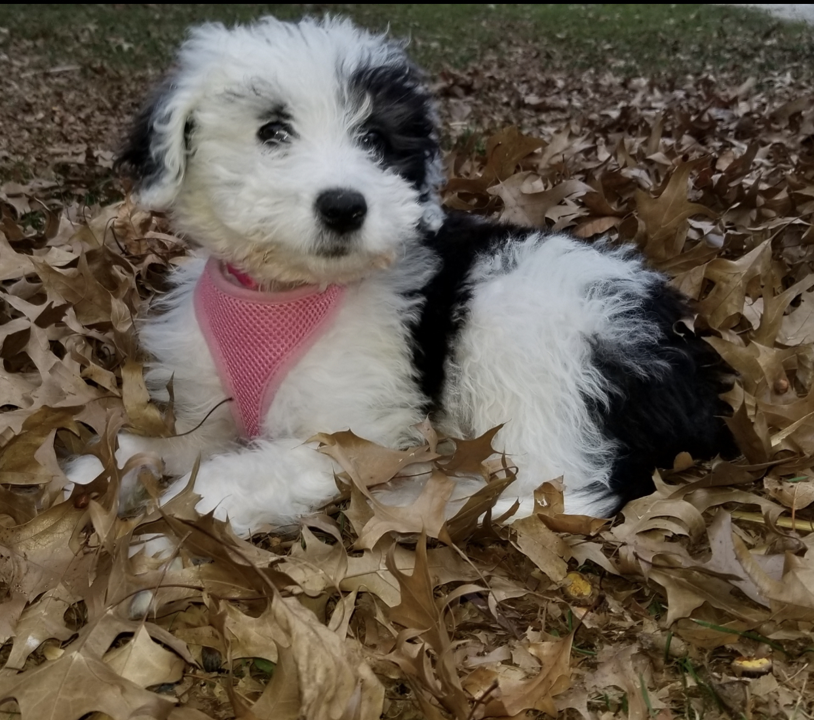

Heddy as a puppy
Bio- Heddy is my parents puppy. She was a surprise gift from my dad to my mom. She is full of energy and nick-named helpful Heddy because she lends her help with everything you are doing even if you do not need it. Her favorite activity is playing kick with a large ball.
Frequently Asked Questions-
How old is Heddy? She is almost 2.
Are you sure she's and Aussie-doodle? Yes! Although she looks like sheep dog poodle mix she is not.